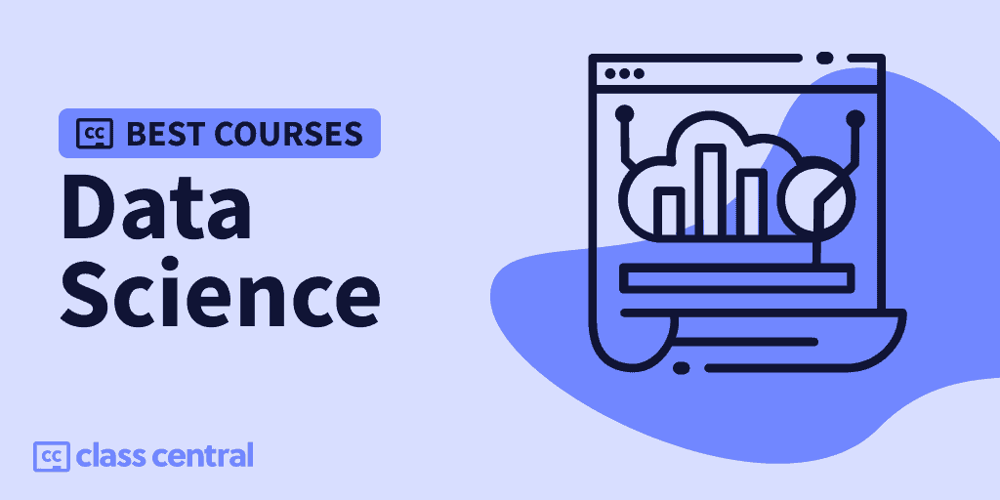
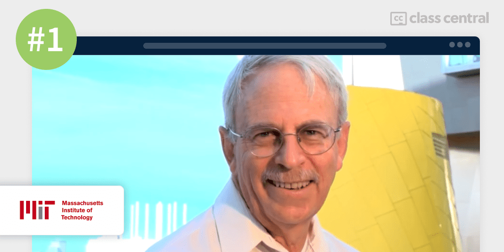
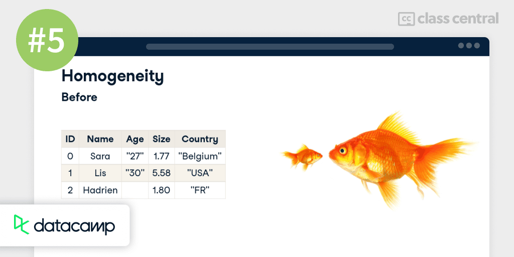
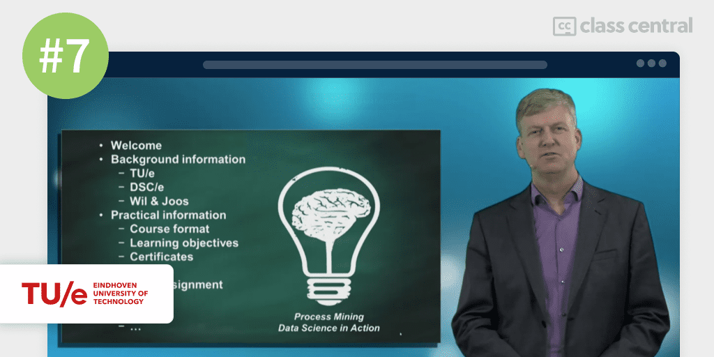
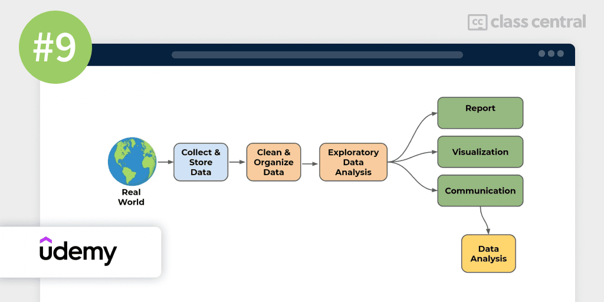

2023 में लेने के लिए 10 सर्वश्रेष्ठ डाटा साइंस पाठ्यक्रम
बेहतरीन ऑनलाइन डेटा साइंस कोर्स के लिए हमारी व्यापक गाइड के साथ सही कोर्स खोजें और डेटा विशेषज्ञ बनें।

क्या आप डेटा साइंस की रोमांचक दुनिया में कूदने के लिए तैयार हैं? चाहे आप नौसिखिए हों या एक अनुभवी प्रोग्रामर, यह मार्गदर्शिका आपको आरंभ करने के लिए शीर्ष ऑनलाइन पाठ्यक्रम खोजने में मदद करने के लिए है। डेटा साइंस एक तेजी से विकसित होने वाला क्षेत्र है जो डेटा से अंतर्दृष्टि निकालने के लिए सांख्यिकी, प्रोग्रामिंग और डोमेन विशेषज्ञता को जोड़ता है। सही कौशल और ज्ञान के साथ, आप बड़े डेटा की शक्ति को अनलॉक कर सकते हैं और अपने करियर में वास्तविक प्रभाव डाल सकते हैं। तो, कमर कस लें, एक कप कॉफी लें, और आइए एक साथ डेटा साइंस की खोज शुरू करें! आप किस का इंतजार कर रहे हैं? आएँ शुरू करें!
यहाँ मेरी शीर्ष पसंद हैं। पाठ्यक्रम विवरण पर जाने के लिए एक पर क्लिक करें:
| अवधि | कार्यभार | संक्षिप्त |
| 1.कम्प्यूटेशनल सोच और डेटा साइंस (एमआईटी) का परिचय | 100—140 घंटे | डेटा साइंस फंडामेंटल पर सुपर व्यापक और कठोर पायथन कोर्स |
| 2.नींव: डेटा, डेटा, हर जगह (गूगल) | 20 घंटे | एक डेटा साइंस कोर्स जो आपको डेटा एनालिटिक्स में करियर के लिए तैयार करता है |
| 3.डेटा साइंस: आर बेसिक्स (हार्वर्ड) | 16 घंटे | गहन पाठ्यक्रमों से निपटने के लिए R में एक मजबूत नींव बनाता है |
| 4.डेटा साइंस के लिए पायथन (फ्रीकोडकैंप) | 12 घंटे | यदि आप पायथन को नहीं जानते हैं लेकिन डेटा साइंस करना चाहते हैं तो बढ़िया है |
| 5.सभी के लिए डेटा साइंस (डेटाकैंप) | चार घंटे | बिना किसी कोडिंग के डेटा विज्ञान और उसके अनुप्रयोगों को पेश करने के लिए उत्कृष्ट पाठ्यक्रम |
| 6.डेटा साइंस में एक क्रैश कोर्स (जॉन्स हॉपकिन्स) | 8 घंटे | बिना किसी कोडिंग के डेटा वैज्ञानिकों के प्रबंधन या काम करने वाले गैर-तकनीकी व्यवसायिक लोगों के लिए सर्वश्रेष्ठ डेटा विज्ञान पाठ्यक्रम |
| 7.प्रोसेस माइनिंग: डेटा साइंस इन एक्शन (आइंधोवेन टेक) | 22 घंटे | डेटा साइंस कोर्स जो बिना किसी कोडिंग के प्रोसेस माइनिंग सिखाता है |
| 8.डेटा साइंस मैथ स्किल्स (ड्यूक) | 13 घंटे | डेटा विज्ञान के लिए मुख्य गणितीय विचारों का अवलोकन |
| 9.मशीन लर्निंग और डेटा साइंस के लिए पायथन (उदमी) | 44 घंटे | पायथन में पहले से ही आश्वस्त लोगों के लिए डेटा साइंस और मशीन लर्निंग पर उत्कृष्ट पाठ्यक्रम |
| 10.आर के साथ डेटा साइंस (प्लूरलसाइट) | 3 घंटे | आर के लिए अच्छा परिचयात्मक पाठ्यक्रम |
डेटा साइंस क्या है?
डेटा साइंस एक ऐसा क्षेत्र है जो विशिष्ट अवलोकनों से सामान्य सिद्धांतों को निकालने के लिए वैज्ञानिक प्रेरण का उपयोग करता है। साथबड़ी मात्रा में डेटाडिजिटल युग में दैनिक रूप से उत्पन्न, मनुष्यों के लिए प्रवृत्तियों की खोज करने के लिए उन सभी को छानना असंभव होगा। यह वह जगह है जहां डेटा वैज्ञानिक आते हैं, मशीन लर्निंग या डीप लर्निंग के माध्यम से कठिन कम्प्यूटेशनल काम को मशीनों पर उतारते हैं।
हालांकि, डेटा वैज्ञानिकों को यह सुनिश्चित करने की आवश्यकता है कि मशीनों को खिलाया गया डेटा साफ है और सही मशीन का चयन किया गया है, और जो तकनीकी रूप से इच्छुक नहीं हैं, उनके लिए निष्कर्षों को संप्रेषित करने के लिए। यह चुनौतीपूर्ण और पुरस्कृत क्षेत्र रहा हैलोकप्रियता प्राप्त करना, के रूप में सम्मानित किया जा रहा है21वीं सदी की सबसे सेक्सी नौकरीहार्वर्ड द्वारा और औसत वेतन का भुगतान$ 120k प्रति वर्षसंयुक्त राज्य अमेरिका में।
डेटा एनालिटिक्स, डेटा साइंस का एक सबसेट, भी कर्षण प्राप्त कर रहा है, और पायथन और आर क्षेत्र में उपयोग की जाने वाली सबसे लोकप्रिय प्रोग्रामिंग भाषाएं हैं। डेटा प्रचुर मात्रा में और हर दिन नई तकनीकों के उभरने के साथ, डेटा साइंस आने वाले वर्षों के लिए एक तेजी से महत्वपूर्ण और रोमांचक क्षेत्र बनने के लिए तैयार है।
डेटा साइंस के साथ मेरा अनुभव
मैंने इस रैंकिंग को अपने मित्र और सहयोगी के सहयोग से बनाया है@manoel.
हम दोनों कंप्यूटर विज्ञान की पृष्ठभूमि से आते हैं और हमारे बीच लगभग 45 एमओओसी पूरा करने के बाद, ऑनलाइन शिक्षार्थी हैं। इसके अतिरिक्त, मनोएल के पास एककंप्यूटर विज्ञान में ऑनलाइन स्नातक, जबकि मैं वर्तमान में कंप्यूटर साइंस में अपना फाउंडेशन पूरा कर रहा हूं। वास्तव में, डेटा साइंस वह प्राथमिक कारण है जिसकी मुझे सीएस में दिलचस्पी है!

पाठ्यक्रम रैंकिंग पद्धति
मैंने इस रैंकिंग को पिछले सर्वोत्तम पाठ्यक्रम मार्गदर्शिकाओं में उपयोग की गई अब आजमाई हुई पद्धति के बाद बनाया है (आप उन सभी को यहाँ पा सकते हैं). इसमें तीन चरणों वाली प्रक्रिया शामिल है:
- शोध करना:मैंने क्लास सेंट्रल के डेटाबेस का लाभ उठाकर शुरुआत की100K ऑनलाइन पाठ्यक्रमऔर 200K+ समीक्षाएं। फिर, मैंने प्रारंभिक चयन किया2,900+ डेटा साइंस पाठ्यक्रमरेटिंग, समीक्षा और बुकमार्क द्वारा।
- मूल्यांकन करना:मैं क्लास सेंट्रल, रेडिट, और पाठ्यक्रम प्रदाताओं पर समीक्षाओं के माध्यम से यह समझने के लिए पढ़ता हूं कि अन्य शिक्षार्थियों ने प्रत्येक पाठ्यक्रम के बारे में क्या सोचा और इसे एक के रूप में अपने स्वयं के अनुभव के साथ जोड़ा।सिखाने वाला.
- चुनना:अच्छी तरह से बनाए गए पाठ्यक्रमों को चुना गया यदि वे मूल्यवान और आकर्षक सामग्री प्रस्तुत करते हैं और उन्हें मानदंडों के एक सेट में फिट होना है और तदनुसार रैंक किया जाना है: व्यापक पाठ्यक्रम, सामर्थ्य, रिलीज की तारीख, रेटिंग और नामांकन।
इस प्रक्रिया से गुज़रने के बाद — क्लास सेंट्रल डेटा, आजीवन शिक्षार्थियों के रूप में हमारे अनुभव, और बहुत सारे संपादन को मिलाकर — हम अपनी अंतिम रैंकिंग पर पहुँचे। अब तक, हमने इस रैंकिंग को बनाने में 21 घंटे से अधिक का समय लगाया है, और हम भविष्य में इसे अपडेट करना जारी रखना चाहते हैं।
इस रैंकिंग के बारे में एक नोट। हालाँकि डेटा साइंस को आमतौर पर डेटा एनालिटिक्स का सुपरसेट माना जाता है, डेटा एनालिटिक्स अपने आप में बहुत अधिक कर्षण प्राप्त कर रहा है, इसलिए मैंने इस रैंकिंग में डेटा एनालिटिक्स पर स्पष्ट रूप से ध्यान केंद्रित करने वाले पिक्स भी शामिल किए हैं। हमने पायथन और आर को शामिल करना भी सुनिश्चित किया है क्योंकि वे डेटा साइंस के लिए उपयोग की जाने वाली सबसे लोकप्रिय प्रोग्रामिंग भाषाएं हैं।
पाठ्यक्रम रैंकिंग सांख्यिकी
यहाँ रैंकिंग के बारे में कुछ समग्र आँकड़े दिए गए हैं:
- प्रत्येक पाठ्यक्रम के लिए नामांकन की संख्या कुल मिलाकर 6.4 मिलियन नामांकन है, जिसमें उच्चतम नामांकित पाठ्यक्रम में 1.6 मिलियन नामांकन हैं।
- सात पाठ्यक्रम मुफ्त या फ्री-टू-ऑडिट हैं, जबकि तीन पाठ्यक्रमों का भुगतान किया जाता है।
- सात पाठ्यक्रम शुरुआती स्तर के हैं, बाकी मध्यवर्ती स्तर पर।
- इस कोर्स में 6 प्रदाताओं की एक विविध सूची है, जिसमें सबसे अधिक प्रतिनिधित्व करने वाला प्रदाता कौरसेरा है।
- इस रैंकिंग में तीन पाठ्यक्रम पायथन का उपयोग करते हैं, दो आर का उपयोग करते हैं, और बाकी में कोडिंग शामिल नहीं है।
- करीब 348k लोग फॉलो कर रहे हैंक्लास सेंट्रल पर डाटा साइंस पाठ्यक्रम.
आगे की हलचल के बिना, शीर्ष चयनों पर चलते हैं।
1.कम्प्यूटेशनल सोच और डेटा विज्ञान का परिचय (मैसाचुसेट्स प्रौद्योगिकी संस्थान)

सर्वश्रेष्ठ डेटा विज्ञान पाठ्यक्रम के लिए मेरी #1 पसंद हैकम्प्यूटेशनल सोच और डेटा साइंस का परिचयedX पर मैसाचुसेट्स इंस्टीट्यूट ऑफ टेक्नोलॉजी द्वारा पेश किया गया।
यहफ्री-टू-ऑडिटपाठ्यक्रम आपको कम्प्यूटेशनल सोच और डेटा विज्ञान में उत्कृष्टता प्राप्त करने के लिए विभिन्न प्रकार की अवधारणाओं और विधियों के साथ सिखाने के लिए डिज़ाइन किया गया है, और यह बहुत सख्ती से करता है, जैसा कि आप एमआईटी पाठ्यक्रम से अपेक्षा करते हैं। रैंकिंग में इस कोर्स पर अब तक का सबसे अधिक कार्यभार है!
यह कोर्स की निरंतरता हैपायथन का उपयोग करके कंप्यूटर विज्ञान और प्रोग्रामिंग का परिचय, हालांकि यदि आपके पास पूर्व पायथन प्रोग्रामिंग अनुभव और एल्गोरिदम और जटिलता का कुछ ज्ञान है, तो आपको इस पाठ्यक्रम को लेने के लिए तैयार रहना चाहिए। यदि आपको आवश्यकता हो, तो मेरे पाठ्यक्रमों में से किसी एक को देखेंपायथन रैंकिंग.
ध्यान रखें कि चूंकि यह कोर्स एक-से-एक प्रतिबिंब है कि एमआईटी में छात्र कैंपस में क्या सीखते हैं और क्या करते हैं, आपको कुछ पाठ्यक्रम सामग्री और असाइनमेंट चुनौतीपूर्ण लग सकते हैं। याद रखें, चुनौती प्रयास लाती है और प्रयास सफलता लाता है!
आप क्या सीखेंगे
इस पाठ्यक्रम में जिन प्रमुख विषयों पर चर्चा की गई है, वे हैं अनुकूलन समस्याएं, स्टोचैस्टिक सोच, दुनिया के मॉडलिंग पहलू और पायथन की उन्नत सुविधाएँ और पुस्तकालय।
पाठ्यक्रम अनुकूलन मॉडल के परिचय के साथ शुरू होता है, जो गणितीय मॉडल हैं जो बाधाओं के एक सेट के तहत किसी समस्या के लिए सर्वोत्तम संभव समाधान की पहचान करने के लिए डिज़ाइन किए गए हैं। समस्याओं को आम तौर पर एक विशिष्ट लक्ष्य के साथ एक फ़ंक्शन के रूप में तैयार किया जाता है, जैसे कि फ़ंक्शन के परिणामों को अधिकतम या कम करना। उदाहरण के लिए, एक अनुकूलन मॉडल का उपयोग किया जा सकता हैएक शहर से दूसरे शहर की न्यूनतम दूरी ज्ञात कीजिए. हालाँकि, कई मापदंडों को हल करना चुनौतीपूर्ण और समय लेने वाला हो सकता है। इसलिए, पाठ्यक्रम अनुकूलन समस्याओं को कुशलतापूर्वक हल करने के लिए उपयोग की जाने वाली विभिन्न तकनीकों और एल्गोरिदम को कवर करेगा।
कुशल एल्गोरिदम का परिचय। आप कंप्यूटर विज्ञान में उपयोग किए जाने वाले सबसे आम और उपयोगी एल्गोरिदम और मॉडल का ज्ञान प्राप्त करेंगे - कुछ नाम रखने के लिए: लालची एल्गोरिदम, चौड़ाई-पहली खोज, और गहराई-पहली खोज। आप इनका उपयोग ऑप्टिमाइज़ेशन समस्याओं से निपटने के लिए करेंगे, जैसे किथैला समस्या, रेखांकन पर वक्र फिटिंग और क्लस्टरिंग।
अगला, पाठ्यक्रम स्टोकेस्टिक सोच की पड़ताल करता है - अर्थात, संभावनाओं के संदर्भ में सोच। दुनिया को मॉडल बनाने वाली गणनाओं के निर्माण के लिए यादृच्छिकता एक अविश्वसनीय रूप से शक्तिशाली उपकरण है। आप समस्याओं के समाधान का अनुकरण करने के लिए यादृच्छिकता का उपयोग करेंगे, जैसेक्या संभावना है कि एक समूह में दो लोगों का जन्मदिन एक ही हो, या उन समस्याओं को भी हल करें जिनमें यादृच्छिकता शामिल नहीं है, जैसे किसी वक्र के अंतर्गत क्षेत्र का अनुमान लगाना।
आपके द्वारा अनुकरण की गई समस्याओं के उत्तरों का विश्लेषण करने के लिए, पाठ्यक्रम में कुछ महत्वपूर्ण सांख्यिकीय तकनीकों को शामिल किया गया है। इनमें PyLab और उनके प्रकार के वितरण, विश्वास अंतराल, नमूनाकरण और मानक त्रुटि, और बहुत कुछ के साथ संभाव्यता घनत्व कार्यों की साजिश रचना शामिल है।
पाठ्यक्रम मशीन सीखने का भी परिचय देता है। आप पर्यवेक्षित और अनुपयोगी शिक्षा के बीच अंतर करेंगे, और मशीन सीखने के अनुप्रयोगों के पीछे के सिद्धांत में गहरी डुबकी लगाएंगे, जैसे रैखिक प्रतिगमन और क्लस्टरिंग। जबकि हम इस विषय पर हैं, यदि आप मशीन सीखने में रुचि रखते हैं, तो आप चाहें तो कर सकते हैंइस रैंकिंग पर एक नजर.
तीन तरह के झूठ होते हैं: झूठ, शापित झूठ और आँकड़े।
पाठ्यक्रम का अंतिम खंड आंकड़ों की सीमाओं और नुकसान पर चर्चा करके समाप्त होता है, और फिर समझाता है कि कुछ सामान्य सांख्यिकीय से कैसे बचा जाए।पापोंलोगों को गुमराह करते थे।
आप कैसे सीखेंगे
पाठ्यक्रम 9 सप्ताह लंबा है, प्रत्येक सप्ताह 14 से 16 घंटे के अध्ययन समय की उम्मीद है। आप वीडियो व्याख्यान के माध्यम से सीखेंगे और प्रदान किए गए समस्या सेटों में आपको जो सिखाया गया है उसे लागू करने में समय व्यतीत करेंगे।
मूल्यांकन के संबंध में, समस्या सेट और परीक्षाएं मुफ्त में ली जा सकती हैं, हालांकि प्रमाणपत्र प्राप्त करने के लिए आपको एक सत्यापित शिक्षार्थी होने की आवश्यकता होगी।
| संस्थान | मैसाचुसेट्स की तकनीकी संस्था |
| प्रदाता | एडएक्स |
| अनुदेशकों | एरिक ग्रिमसन, जॉन गुट्टाग, एना बेल |
| स्तर | मध्यम |
| कार्यभार | कुल 100-140 घंटे |
| नामांकन | 223कि |
| प्रमाणपत्र | चुकाया गया |
मजेदार तथ्य
- क्लास सेंट्रल पर इस कोर्स के 8.3k बुकमार्क हैं।
- पाठ्यक्रम पुस्तक पर आधारित हैपायथन का उपयोग करके संगणना और प्रोग्रामिंग का परिचय, दूसरा संस्करण.
- यह edX XSeries प्रोग्राम का दूसरा और आखिरी कोर्स है,पायथन का उपयोग कर कम्प्यूटेशनल सोच.
- प्रो. एरिक ग्रिमसन, प्रमुख पाठ्यक्रम प्रशिक्षक, ने aGoogle विद्वान पर 79 एच-इंडेक्स- अगर आप सोच रहे हैं, हाँ, यह बहुत कुछ है!
यदि आप इस पाठ्यक्रम में रुचि रखते हैं, तो आप पा सकते हैंपाठ्यक्रम के बारे में अधिक जानकारी और यहां नामांकन कैसे करें.
2.नींव: डेटा, डेटा, हर जगह (गूगल)

सर्वश्रेष्ठ डेटा साइंस कोर्स के लिए मेरी दूसरी पसंद हैनींव: डेटा, डेटा, हर जगह, Google द्वारा कौरसेरा पर पेश किया गया। यदि आप एक ऐसे प्रोग्राम की तलाश कर रहे हैं जो आपको डेटा एनालिटिक्स करियर के लिए तैयार करेगा, तो यहफ्री-टू-ऑडिटपाठ्यक्रम वह हो सकता है जिसकी आपको आवश्यकता है क्योंकि यह बहुत व्यावहारिक और कार्य-उन्मुख है।
Google के अपने डेटा विश्लेषकों द्वारा सिखाया गया यह पाठ्यक्रम आपको एक सफल जूनियर डेटा विश्लेषक बनने के लिए आवश्यक कौशल और मानसिकता प्रदान करता है। आप समझेंगे कि डेटा विश्लेषक होने का क्या मतलब है और जानें कि डेटा विश्लेषक अपने दैनिक कार्यप्रवाह में कौन से टूल और प्रक्रियाओं का उपयोग करते हैं।
इस कोर्स को करने के लिए आपको किसी पूर्व अनुभव की आवश्यकता नहीं होगी।
आप क्या सीखेंगे
पाठ्यक्रम एक जूनियर डेटा विश्लेषक की भूमिकाओं और जिम्मेदारियों को कवर करता है, कैसे व्यवसाय डेटा को कार्रवाई योग्य अंतर्दृष्टि, स्प्रेडशीट मूल बातें, डेटाबेस और क्वेरी मूल बातें और डेटा विज़ुअलाइज़ेशन मूल बातें में बदलते हैं।
पाठ्यक्रम डेटा और डेटा एनालिटिक्स के परिचय के साथ शुरू होता है। डेटा कच्ची जानकारी का एक संग्रह है, जबकि डेटा विश्लेषण निष्कर्ष निकालने, भविष्यवाणी करने और निर्णय लेने के लिए डेटा को एक साथ जोड़ने की प्रक्रिया है। आप बेहतर व्यावसायिक निर्णयों को सूचित करने में डेटा विश्लेषकों की भूमिका के बारे में जानेंगे।
अगला खंड डेटा विश्लेषकों के पांच आवश्यक कौशल और विश्लेषणात्मक सोच के पांच प्रमुख पहलुओं पर प्रहार करता है। आप देखेंगे कि कैसे इन क्षमताओं का होना आपको एक बेहतर डेटा-संचालित निर्णय-निर्माता में बदल देता है।
बाद में, आप डेटा जीवन चक्र के छह चरणों का पता लगाएंगे, जैसे डेटा को कैप्चर करना, विश्लेषण करना और नष्ट करना। इस ज्ञान के साथ, आप समझेंगे कि डेटा विश्लेषण प्रक्रिया तक कैसे पहुंचा जाए, जिसमें छह चरण होते हैं। हां, ध्यान देने के लिए बहुत सारे चरण हैं, लेकिन याद रखें कि इन चरणों का पालन करने से यह सुनिश्चित होता है कि आप गलती से किसी महत्वपूर्ण मामले को नज़रअंदाज़ नहीं कर देते हैं - जैसे अपने डेटा को साफ करना या मानकीकृत करना!
आप खुलेंगे और डेटा विश्लेषक के टूलबॉक्स में झाँकेंगे। पाठ्यक्रम दो तरीकों पर चर्चा करेगा जिससे हम डेटा स्टोर कर सकते हैं: Microsoft Excel या Google पत्रक जैसी स्प्रेडशीट में; या डेटाबेस में हम SQL जैसी क्वेरी भाषाओं का उपयोग करके बातचीत कर सकते हैं। आप समझ जाएंगे कि कब एक के ऊपर एक का उपयोग करना है। इसके अतिरिक्त, पाठ्यक्रम में यह भी शामिल होगा कि झांकी, लुकर और आर जैसे उपकरणों के साथ डेटा पैटर्न और रुझानों की कल्पना कैसे करें।
अंत में, आप डेटा विश्लेषकों के लिए उपलब्ध नौकरी के विभिन्न प्रकार के अवसरों, नौकरी की खोज में सर्वोत्तम प्रथाओं और कंपनियों को आपके काम से क्या उम्मीदें हैं, इस पर गौर करेंगे। व्यावसायिक कार्यों के लिए डेटा का विश्लेषण करते समय पाठ्यक्रम निष्पक्षता के महत्व और पूर्वाग्रह से बचने के अनुस्मारक के साथ समाप्त होता है।
आप कैसे सीखेंगे
पाठ्यक्रम प्रति सप्ताह 4 घंटे के औसत वर्कलोड के साथ 5 सप्ताह लंबा है। शिक्षा का प्राथमिक माध्यम वीडियो व्याख्यान और पठन सामग्री है, जो उत्पादन की गुणवत्ता के मामले में उत्कृष्ट हैं।
मूल्यांकन के संबंध में, 5 साप्ताहिक चुनौतियाँ होंगी और एक अंतिम पाठ्यक्रम चुनौती होगी जिसे आपको एक ग्रेड अर्जित करने के लिए पूरा करना होगा यदि आप प्रमाणपत्र के लिए भुगतान कर रहे हैं। इतना ही नहीं, पाठ्यक्रम कई लघु क्विज़ और फ्लैशकार्ड प्रदान करता है जिनका उपयोग आपने जो सीखा है उसे संशोधित करने के लिए कर सकते हैं।
| संस्थान | गूगल |
| प्रदाता | Coursera |
| स्तर | शुरुआती |
| कार्यभार | कुल 20 घंटे |
| नामांकन | 1.6 मी |
| रेटिंग | 4.8 / 5.0 (76के) |
| प्रमाणपत्र | चुकाया गया |
मजेदार तथ्य
- यह कोर्स का पहला कोर्स हैGoogle डेटा विश्लेषिकी व्यावसायिक प्रमाणपत्र. यह आपको प्रारंभिक स्तर के डेटा विश्लेषक नौकरियों के लिए आवेदन करने के लिए तैयार करने में मदद करता है।
- व्यावसायिक प्रमाणपत्र R प्रोग्रामिंग भाषा का उपयोग करता है। यहाँ कोई पायथन नहीं है!
- जब डेटा संग्रह और भंडारण की बात आती है तो दुनिया की सबसे बड़ी कंपनियों में से एक के रूप में, Google बड़ी संख्या में डेटा वैज्ञानिकों को नियुक्त करता है, जिससे वे डेटा विज्ञान सीखने के लिए एक उत्कृष्ट स्रोत बन जाते हैं।
यदि आप इस पाठ्यक्रम में रुचि रखते हैं, तो आप पा सकते हैंपाठ्यक्रम के बारे में अधिक जानकारी और यहां नामांकन कैसे करें.
3.डेटा साइंस: आर बेसिक्स (हार्वर्ड यूनिवर्सिटी)

सर्वश्रेष्ठ डेटा साइंस कोर्स के लिए मेरी तीसरी पसंद हैडेटा साइंस: आर बेसिक्स, edX पर हार्वर्ड यूनिवर्सिटी द्वारा पेश किया गया।
यह क्या सेट करता हैफ्री-टू-ऑडिटबेशक दूसरों से अलग इसकी अनूठी शिक्षाशास्त्र है। युनाइटेड स्टेट्स में अपराध पर केंद्रित एक केस स्टडी के माध्यम से, आप 'सबसे छोटा राज्य कौन सा है?', 'सबसे खतरनाक राज्य कौन सा है?', और 'औसत हत्या क्या है' जैसे सवालों के जवाब देने के लिए एक डेटासेट का विश्लेषण और उपयोग करेंगे। अमेरिका की संपूर्णता में दर?' - बिना गुगली के!
हालांकि किसी प्रोग्रामिंग अनुभव की आवश्यकता नहीं है, पाठ्यक्रम मानता है कि आप बुनियादी गणित और बीजगणित के साथ सहज हैं।
आप क्या सीखेंगे
पाठ्यक्रम को चार खंडों में विभाजित किया गया है: आर बेसिक्स, वेक्टर्स एंड सॉर्टिंग, रैंगलिंग एंड विज़ुअलाइज़िंग डेटा, और प्रोग्रामिंग बेसिक्स।
R और RStudio की बुनियादी बातों से शुरुआत करते हुए, आप समझेंगे कि कौन सी चीज़ R को डेटा विश्लेषण के लिए एक लोकप्रिय भाषा बनाती है। आप अध्ययन करेंगे कि वस्तुएं क्या हैं, कैसे परिभाषित करें और उनके साथ बुनियादी अंकगणितीय और तार्किक संचालन करें। पाठ्यक्रम में आर में कुछ महत्वपूर्ण पूर्व-परिभाषित कार्यों को शामिल किया गया है। आप आर में विभिन्न डेटा प्रकारों के बीच अंतर करने में भी सक्षम होंगे (3 और '3' दो अलग-अलग चीजें हैं!)।
इसके बाद, आप R — सदिशों की एक अन्य महत्वपूर्ण विशेषता से रूबरू होंगे। वेक्टर शक्तिशाली होते हैं क्योंकि वे बड़े डेटासेट के बिल्डिंग ब्लॉक्स बनाते हैं। आप वैक्टर बनाएंगे और उनका उपयोग शहरों की सूची या संख्याओं के अनुक्रम बनाने के लिए करेंगे, जिन्हें आप क्रमबद्ध या जोड़ सकते हैं। पाठ्यक्रम आपको वेक्टर अंकगणित की मूल बातों पर मार्गदर्शन करता है, जैसे कि दो वैक्टर को एक साथ कैसे जोड़ा जाए या वेक्टर को स्केल करने का क्या अर्थ है। इसके अतिरिक्त, आप अमेरिका में सबसे खतरनाक स्थिति का पता लगाने के लिए इंडेक्सिंग और सबसेटिंग विधियों का उपयोग करेंगे।
अंत में, आपको व्यापक दर्शकों के लिए अपनी अंतर्दृष्टि को संप्रेषित करने में मदद करने के लिए R में प्लॉटिंग की मूल बातें सिखाई जाएंगी। आप चार अलग-अलग प्रकार के प्लॉट सीखेंगे जिनका उपयोग आप डेटा में पैटर्न और रुझानों की कल्पना करने के लिए कर सकते हैं: लाइन प्लॉट, हिस्टोग्राम, बॉक्सप्लॉट और हीटमैप।
आप कैसे सीखेंगे
यह कोर्स 8 सप्ताह लंबा है, जिसमें प्रत्येक सप्ताह को पूरा करने में 1 से 2 घंटे लगते हैं। पाठ्यक्रम में कई वीडियो व्याख्यान और पठन सामग्री की एक श्रृंखला शामिल है।
मूल्यांकन के संबंध में, पाठ्यक्रम के कुछ अभ्यासों में कोड लिखना और इसे सीधे जमा करना शामिल हैडेटाकैंप काब्राउज़र-आधारित प्रोग्रामिंग वातावरण, हालांकि प्रमुख आकलन RStudio का उपयोग करके पूरा किया जाना चाहिए।
| संस्थान | विदेश महाविद्यालय |
| प्रदाता | एडएक्स |
| प्रशिक्षक | राफेल इरिज़री |
| स्तर | शुरुआती |
| कार्यभार | कुल 16 घंटे |
| नामांकन | 785 किमी |
| प्रमाणपत्र | चुकाया गया |
मजेदार तथ्य
- डेटा साइंस: आर बेसिक्सक्लास सेंट्रल पर 7.8k बुकमार्क हैं।
- यह हार्वर्ड के इंटेंसिव कोर्स में से नौ में से पहला कोर्स हैडेटा साइंस प्रोफेशनल सर्टिफिकेट.
- व्यावसायिक प्रमाणपत्र के साथ आता हैएक साथी किताबपाठ्यक्रम प्रशिक्षक, राफेल इरिज़ाररी द्वारा लिखित।
- हमने पहले इसका उल्लेख किया था, लेकिन यह दोहराना उचित है: आप डेटाकैम्प के सुविधाजनक ब्राउज़र-आधारित कोड संपादक के माध्यम से कुछ कार्य पूरे करेंगे। यदि आप DataCamp का आनंद लेते हैं, तो आप हमारी जाँच करना चाह सकते हैंपांचवां नीचे उठाओ.
यदि आप इस पाठ्यक्रम में रुचि रखते हैं, तो आप पा सकते हैंपाठ्यक्रम के बारे में अधिक जानकारी और यहां नामांकन कैसे करें.
4.डेटा साइंस के लिए पायथन - शुरुआती लोगों के लिए कोर्स (पाइथन, पांडा, न्यूमपी, माटप्लोटलिब सीखें)

यदि आप पायथन के साथ डेटा साइंस सीखना चाहते हैं, लेकिन प्रोग्रामिंग का कोई अनुभव नहीं है, तो यह कोर्स आपके लिए है।
यह शुरुआत के अनुकूल,मुक्तFreeCodeCamp के YouTube चैनल पर पाठ्यक्रम आपको पायथन और डेटा साइंस दोनों के मूल सिद्धांतों को हासिल करने में मदद करने के लिए जमीन से मार्गदर्शन करेगा। पाठ्यक्रम न केवल एक वैचारिक दृष्टिकोण से पायथन और डेटा विज्ञान को कवर करता है, बल्कि इसमें डेटा वैज्ञानिकों द्वारा उपयोग किए जाने वाले टूल और लाइब्रेरी भी शामिल हैं, जैसे एनाकोंडा, न्यूमपी, पांडा और माटप्लोटलिब, इसलिए आपको भरपूर व्यावहारिक अनुभव भी मिलता है।
आप क्या सीखेंगे
पाठ्यक्रम में चार मुख्य विषय शामिल हैं: प्रॉब्लम सॉल्विंग, पायथन की ताकत, पायथन फंडामेंटल और डेटा साइंस।
पाठ्यक्रम प्रोग्रामिंग के साथ समस्या समाधान पर एक ट्यूटोरियल के साथ शुरू होता है, किसी भी प्रोग्रामर के पास सबसे आवश्यक कौशल होना चाहिए। आप सीखेंगे कि जटिल समस्याओं को कैसे हल किया जाए और सरल एल्गोरिदम के साथ-साथ उन्हें सरल भागों में विभाजित किया जाए। फिर आप डेटा विज्ञान के लिए उपयोग किए जाने वाले पायथन के लोकप्रिय वितरण एनाकोंडा के साथ पायथन को स्थापित और चलाएंगे।
एक बार जब आप अपनाज्यूपिटर नोटबुककोडिंग वातावरण, आप पायथन प्रोग्रामिंग की मूल बातों की ओर बढ़ेंगे। इसमें वेरिएबल्स और ऑपरेटरों, बूलियन्स और तुलना, नियंत्रण प्रवाह और कार्यों, और बहुत कुछ के बारे में सीखना शामिल है।
पाठ्यक्रम तब आपको कुछ और उन्नत पायथन विषयों पर निर्देश देता है, जैसे कि पायथन मॉड्यूल का आयात और उपयोग करना, पाठ को संशोधित करना और पार्स करना, साथ ही सूचियों, टुपल्स, सेट और शब्दकोशों जैसी प्रमुख डेटा संरचनाएं और एक के ऊपर एक का उपयोग कब करना है।
ये सभी संयुक्त आपको छोटे प्रोग्राम लिखने में सक्षम एक उत्कृष्ट पायथन प्रोग्रामर बना देंगे। लेकिन पाठ्यक्रम आपको केवल इतना ही नहीं सिखाएगा।
आपको डेटा विज्ञान में उपयोग की जाने वाली तीन सबसे लोकप्रिय पायथन लाइब्रेरी से परिचित कराया जाएगा। NumPy से शुरू करके, आप NumPy सरणियों के साथ तेज़ और कुशल कोड लिखेंगे जो नियमित Python सूचियों की तुलना में 5-100 गुना तेज़ हैं।
बाद में आप NumPy के बड़े भाई, पांडा के पास जाएँगे। पंडों का उपयोग डेटा की पंक्तियों और स्तंभों (अलग-अलग तालिकाओं को रखें) का प्रतिनिधित्व करने और गणना करने के लिए किया जाता है, जिसे आप डेटा वैज्ञानिक के रूप में बहुत से व्यवहार करेंगे। अंत में, आप Matplotlib के बारे में सीखेंगे, एक उच्च-कॉन्फ़िगर करने योग्य डेटा विज़ुअलाइज़ेशन लाइब्रेरी जो आपको डेटा के भीतर छिपे हुए पैटर्न को प्लॉट करने और प्रकट करने की अनुमति देती है।
आप कैसे सीखेंगे
पाठ्यक्रम 12 घंटे लंबा है और अक्सर कोडिंग प्रदर्शनों के साथ व्याख्यान और स्लाइड-एस प्रारूप में प्रस्तुत किया जाता है। सिखाई गई अवधारणाओं को लागू करने और बनाए रखने के लिए आपसे प्रशिक्षक के साथ कोड करने की अपेक्षा की जाती है।
| संस्थान | freeCodeCamp |
| प्रदाता | यूट्यूब |
| प्रशिक्षक | मैक्सवेल आर्म्स |
| स्तर | शुरुआती |
| कार्यभार | कुल 12 घंटे |
| दृश्य | 1.6M बार देखा गया |
| रेटिंग | 45 हजार लाइक |
| प्रमाणपत्र | कोई नहीं |
मजेदार तथ्य
- फ्रीकोडकैंप का यूट्यूब चैनलविभिन्न कंप्यूटर विज्ञान और प्रोग्रामिंग विषयों पर 1000 से अधिक वीडियो और व्याख्यान हैं - सभी मुफ्त में!
- कोर्स के प्रशिक्षक मैक्सवेल आर्मी के पास हैउसका अपना YouTube चैनलडेटा साइंस वीडियो से भरा हुआ। उसे बाहर जाँचें!
यदि आप इस पाठ्यक्रम में रुचि रखते हैं, तो आप पा सकते हैंपाठ्यक्रम के बारे में अधिक जानकारी और यहां नामांकन कैसे करें.
5.डेटा साइंस को समझना (डेटाकैंप)

के समानGoogle की नींव: डेटा, डेटा, हर जगहलेकिन बहुत छोटा, डेटाकैम्प काडेटा साइंस को समझनाडेटा विज्ञान पढ़ाता है जिसमें कोई कोडिंग शामिल नहीं है। यदि आप इस बारे में सुनिश्चित नहीं हैं कि वास्तव में डेटा विज्ञान क्या है और इसके अनुप्रयोग क्या हैं, तो यह पाठ्यक्रम आपको प्रबुद्ध करेगा।
सभी के लिए डेटा साइंसआपको डेटा साइंस की दुनिया से परिचित कराता है, डेटा साइंटिस्ट की विभिन्न भूमिकाएँ और ज़िम्मेदारियाँ, साथ ही साथ डेटा साइंटिस्ट अपने करियर के हिस्से के रूप में किस तरह का काम करते हैं।
इस कोर्स को करने के लिए आपको किसी पूर्व अनुभव की आवश्यकता नहीं है।
आप क्या सीखेंगे
डेटा विज्ञान को सीधे शब्दों में परिभाषित किया जाता है कि डेटा को बड़े पैमाने पर लेने और सार्थक निष्कर्ष निकालने के लिए उनका उपयोग करने के लिए कार्यप्रणाली का सेट है। आप डेटा साइंस वर्कफ़्लो के पहले चार चरणों को उजागर करेंगे: डेटा संग्रह और संग्रहण, डेटा तैयारी, अन्वेषण और विज़ुअलाइज़ेशन, और प्रयोग और भविष्यवाणी। पाठ्यक्रम तब डेटा विज्ञान की चार सामान्य नौकरियों - डेटा इंजीनियर, डेटा विश्लेषक, डेटा वैज्ञानिक और मशीन लर्निंग वैज्ञानिक - और जहां वे डेटा साइंस वर्कफ़्लो में फिट होते हैं, का वर्णन करता है।
पाठ्यक्रम डेटा साइंस वर्कफ़्लो के पहले चरण को अनपैक करता है: डेटा संग्रह और संग्रहण। आप सीखेंगे कि डेटा वैज्ञानिक अपना डेटा कहाँ से निकालते हैं, डेटा कैसा दिखता है और उन्हें कुशलतापूर्वक कैसे संग्रहीत किया जाता है, और डेटा पाइपलाइन प्रक्रिया को कैसे स्वचालित कर सकती है।
इसके बाद, आप वर्कफ़्लो के चरण दो और तीन के बारे में जानेंगे: डेटा तैयार करना, एक्सप्लोरेशन और विज़ुअलाइज़ेशन। डेटा तैयारी डेटा साइंस वर्कफ़्लो का सबसे महत्वपूर्ण हिस्सा है। डेटा वैज्ञानिक अपना 80% समय गारबेज इन, गारबेज आउट सिद्धांत के कारण अपने डेटा को साफ करने में लगाते हैं - यदि आप किसी मॉडल को कूड़ा देते हैं, तो आपको मिलने वाली भविष्यवाणियां कचरा होंगी। आप सीखेंगे कि अपने डेटासेट को कैसे एक्सप्लोर करें और लापता मान और आउटलेयर जैसी सामान्य समस्याओं से कैसे निपटें। एक बार जब आप अपना डेटा साफ़ कर लेते हैं, तो आप उन सामान्य टूल के बारे में जानेंगे जिनका उपयोग डेटा वैज्ञानिक सुंदर विज़ुअलाइज़ेशन बनाने के लिए करते हैं।
अंत में, आप डेटा साइंस वर्कफ़्लो के प्रयोग और भविष्यवाणी चरण के बारे में जानेंगे। पाठ्यक्रम ए / बी परीक्षण, सांख्यिकीय महत्व के लिए परीक्षण और समय श्रृंखला पूर्वानुमान जैसी विभिन्न सांख्यिकीय तकनीकों पर केंद्रित है। पाठ्यक्रम पर्यवेक्षित और अनुपयोगी मशीन लर्निंग के बीच अंतर और उनका उपयोग कब करना है, इस पर एक खंड के साथ समाप्त होता है।
आप कैसे सीखेंगे
इसकी संपूर्णता में पाठ्यक्रम 2 घंटे लंबा है और इसमें 4 भाग होते हैं, जिसमें प्रत्येक खंड में वीडियो व्याख्यान और अभ्यास होते हैं।
डेटाकैम्प के बारे में मुझे एक बात पसंद है कि यह पाठ्यक्रम आपको इंटरैक्टिव अभ्यासों के माध्यम से वीडियो सामग्री से सीखी गई बातों को बनाए रखने के कई अवसर देता है।
| संस्थान | डेटाकैंप |
| अनुदेशकों | सारा बिलन, लिस सुलमोंट, हैड्रियन लैक्रोइक्स |
| स्तर | शुरुआती |
| कार्यभार | कुल 4 घंटे |
| नामांकन | 413के |
| रेटिंग | 4.8 (331 समीक्षाएं) |
| प्रमाणपत्र | चुकाया गया |
मजेदार तथ्य
- हैड्रियन लैक्रोइक्स, पाठ्यक्रम के प्रशिक्षकों में से एक, ने मशीन लर्निंग से लेकर डेटा इंजीनियरिंग तक के 30 से अधिक पाठ्यक्रम पढ़ाए हैं। वह भी वर्तमान में एक में नामांकित हैजॉर्जिया टेक में विश्लेषिकी के परास्नातक.
- सारा बीलेनऔरलिस सुलमोंट, जो हैड्रियन के साथ पाठ्यक्रम का सह-निर्देशन करते हैं, डेटाकैम्प पर 10 से अधिक अन्य पाठ्यक्रमों और परियोजनाओं को पढ़ाते हैं।
यदि आप इस पाठ्यक्रम में रुचि रखते हैं, तो आप पा सकते हैंपाठ्यक्रम के बारे में अधिक जानकारी और यहां नामांकन कैसे करें.
6.डेटा साइंस में क्रैश कोर्स (जॉन्स हॉपकिन्स यूनिवर्सिटी)

डेटा साइंस में क्रैश कोर्सजॉन हॉपकिंस विश्वविद्यालय द्वारा डेटा विज्ञान का एक छोटा लेकिन गहन अवलोकन है - कोई कोडिंग शामिल नहीं है। जो बात इसे पिछली सूची से अलग बनाती है वह यह है कि यह गैर-तकनीकी लोगों के लिए तैयार है जो डेटा वैज्ञानिकों का प्रबंधन और/या उनके साथ काम करेंगे।
इसका लक्ष्यफ्री-टू-ऑडिटपाठ्यक्रम आपको जितनी जल्दी हो सके गति प्रदान करने के लिए है ताकि आप व्यावहारिक डेटा विज्ञान के लाभों को प्राप्त करने के लिए काम कर सकें। पाठ्यक्रम को उच्च-स्तरीय दृष्टिकोण से पढ़ाया जाता है, इसलिए यह तकनीकी पहलुओं में शामिल हुए बिना केवल आवश्यक को कवर करेगा।
इस कोर्स को करने से पहले किसी भी शर्त की आवश्यकता नहीं है।
आप क्या सीखेंगे
पाठ्यक्रम जोर देकर शुरू होता हैविज्ञानडेटा विज्ञान में। विज्ञान वैज्ञानिक परिकल्पना से शुरू होता है और फिर उपयोगी परिणाम प्राप्त करने के अंतिम लक्ष्य के साथ प्रयोग करके इसकी वैधता की पुष्टि करने की कोशिश करता है। इसी तरह, डेटा साइंस को सवालों की एक श्रृंखला के साथ शुरू करना चाहिए। आप डेटा के साथ किस प्रश्न का उत्तर देने का प्रयास कर रहे हैं? क्या आपके पास वास्तव में उस प्रश्न का उत्तर देने के लिए डेटा है? उत्तर कैसे उपयोगी होगा?
आप सीखेंगे कि कैसे सांख्यिकी, मशीन लर्निंग और सॉफ्टवेयर इंजीनियरिंग डेटा विज्ञान में एक बड़ी भूमिका निभाते हैं। उदाहरण के लिए, क्रॉस सत्यापन क्या है? पर्यवेक्षित और अनुपयोगी शिक्षा के बीच क्या अंतर है? डेटा वैज्ञानिक किस प्रोग्रामिंग भाषा का उपयोग करते हैं? आप इन प्रमुख शर्तों और उपकरणों को समझेंगे ताकि आप डेटा वैज्ञानिकों के साथ प्रभावी ढंग से संवाद कर सकें।
बाद में, आप डेटा साइंस प्रोजेक्ट की संरचना का पता लगाएंगे। आप डेटा साइंस वर्कफ़्लो के चरणों का अध्ययन करेंगे और वे समग्र परिणाम में कैसे योगदान करते हैं, जैसे खोजपूर्ण डेटा विश्लेषण और औपचारिक मॉडलिंग। अंत में, आप सीखेंगे कि कैसे डेटा वैज्ञानिक अपनी अंतर्दृष्टि को दूसरों तक पहुँचाते हैं, और यह कैसे निर्धारित करें कि डेटा साइंस प्रोजेक्ट सफल है या नहीं।
आप कैसे सीखेंगे
यह कोर्स 7 से 8 घंटे की सामग्री के साथ 1 सप्ताह का है। यह आपके सीखने को समेकित करने के लिए कई असाइनमेंट के साथ-साथ आपको सीखने के लिए विभिन्न वीडियो और पठन सामग्री प्रदान करता है। हालाँकि, आप केवल असाइनमेंट तक पहुँच सकते हैं यदि आपने प्रमाणन या संपूर्ण विशेषज्ञता के लिए भुगतान किया है।
| संस्थान | जॉन्स हॉपकिन्स विश्वविद्यालय |
| प्रदाता | Coursera |
| अनुदेशकों | जेफ लीक, ब्रायन कैफो, रोजर पेंग |
| स्तर | शुरुआती |
| कार्यभार | कुल 8 घंटे |
| नामांकन | 191 किमी |
| रेटिंग | 4.5 / 5.0 (8K) |
| प्रमाणपत्र | चुकाया गया |
मजेदार तथ्य
- डेटा साइंस में क्रैश कोर्समें पांच में से पहला कोर्स हैकार्यकारी डेटा विज्ञान विशेषज्ञता. इसके बाद अगला कोर्स हैवास्तविक जीवन में डेटा विज्ञान.
- मुफ्त पाठ्यपुस्तक,कार्यकारी डेटा विज्ञान, विशेषज्ञता की सामग्री पर आधारित है और डेटा विज्ञान परियोजना प्रबंधन पर अतिरिक्त उदाहरण प्रदान करता है।
यदि आप इस पाठ्यक्रम में रुचि रखते हैं, तो आप पा सकते हैंपाठ्यक्रम के बारे में अधिक जानकारी और यहां नामांकन कैसे करें.
7.प्रक्रिया खनन: क्रिया में डेटा विज्ञान (प्रौद्योगिकी के आइंडहोवन विश्वविद्यालय)

यहफ्री-टू-ऑडिटअवधि,प्रोसेस माइनिंग: डेटा साइंस इन एक्शनसामग्री के मामले में इस रैंकिंग में अन्य पाठ्यक्रमों से काफी अलग है। शुरुआत के लिए, यह पाठ्यक्रम आपको कोडिंग नहीं सिखाएगा। यह आपको जो सिखाता है वह प्रमुख सैद्धांतिक उपकरण और विश्लेषणात्मक कौशल है जो प्रक्रिया खनन करने के लिए आवश्यक है - "सिर्फ" डेटा खनन नहीं, हम यहां अमूर्तता की सीढ़ी में ऊपर हैं, और हम विशेष क्षेत्र में प्रवेश कर रहे हैं।
यह पाठ्यक्रम इस बात पर जोर देता है कि प्रक्रियाओं को डेटा के समान ही प्रथम श्रेणी के नागरिक माना जाना चाहिए, और इसलिए, उन्हें उसी जांच के माध्यम से रखा जाना चाहिए।
पाठ्यक्रम विभिन्न प्रकार के एप्लिकेशन डोमेन में सिद्धांत को सीधे लागू करने के लिए उपयोग में आसान सॉफ़्टवेयर, वास्तविक जीवन डेटा सेट और व्यावहारिक कौशल प्रदान करता है।
प्रोसेस माइनिंग पर अधिक: प्रोसेस माइनिंग एक तकनीक है जिसका उपयोग प्रक्रियाओं का विश्लेषण और ट्रैक करने के लिए किया जाता है। इसका लक्ष्य संगठनों को ईवेंट डेटा को कार्रवाई योग्य अंतर्दृष्टि में बदलने में सहायता करना है। उदाहरण अनुप्रयोगों में शामिल हैं: अस्पतालों में उपचार प्रक्रियाओं का विश्लेषण, बुकिंग साइटों का उपयोग करने वाले ग्राहकों के ब्राउज़िंग व्यवहार को समझना, बैगेज हैंडलिंग सिस्टम की विफलताओं का विश्लेषण करना और एक्स-रे मशीन के उपयोगकर्ता इंटरफ़ेस में सुधार करना।
इस कोर्स को करने के बाद, आप प्रोसेस माइनिंग प्रोजेक्ट्स चलाने में सक्षम होंगे और बिजनेस प्रोसेस इंटेलिजेंस फील्ड की अच्छी समझ होगी। आप व्यावहारिक डेटा विज्ञान ज्ञान से भी लाभान्वित होंगे जिसे विभिन्न डोमेन में प्रक्रियाओं के विश्लेषण और सुधार के लिए सीधे लागू किया जा सकता है। इसलिए इस पाठ्यक्रम में डेटा साइंस के भीतर अच्छी तरह से परिभाषित गुंजाइश है जो उन शिक्षार्थियों के लिए उपयुक्त हो सकती है जिनके पास पहले से ही क्षेत्र की पृष्ठभूमि है और वे एक अतिरिक्त पहलू का पता लगाना चाहते हैं।
पाठ्यक्रम इस पाठ्यक्रम को लेने से पहले स्नातक स्तर पर तर्क, सेट और सांख्यिकी की बुनियादी समझ रखता है।
आप क्या सीखेंगे
यह कोर्स उन दृष्टिकोणों और तकनीकों के अवलोकन के साथ शुरू होता है जो निर्णय लेने और व्यवसाय प्रक्रिया (पुनः) डिजाइन का समर्थन करने के लिए इवेंट डेटा का उपयोग करते हैं।
पहली प्रकार की प्रक्रिया खनन खोज है। एक डिस्कवरी तकनीक एक इवेंट लॉग लेती है और किसी पूर्व-प्राथमिक जानकारी का उपयोग किए बिना एक प्रक्रिया मॉडल तैयार करती है। लॉग में रिकॉर्ड किए गए व्यवहार को समझाते हुए एक प्रक्रिया मॉडल तैयार करने के लिए आपको इवेंट लॉग लेने वाले एल्गोरिथम का एक उदाहरण दिया जाएगा। पाठ्यक्रम तब आपको ईवेंट डेटा से प्रक्रिया मॉडल खोजने के अन्य तरीके दिखाता है।
दूसरे प्रकार की प्रक्रिया खनन अनुरूपता है। यहां, मौजूदा प्रोसेस मॉडल की तुलना उसी प्रोसेस के इवेंट लॉग से की जाती है। आप सीखेंगे कि अनुरूपता जांच कैसे करें यह निर्धारित करने के लिए कि क्या वास्तविकता, जैसा कि लॉग में दर्ज है, मॉडल के अनुरूप है और इसके विपरीत।
अंत में, आप पाएंगे कि प्रोसेस माइनिंग को रनिंग प्रोसेस पर कैसे लागू किया जा सकता है, जो तीसरे प्रकार की प्रोसेस माइनिंग है जिसे एन्हांसमेंट कहा जाता है। कुछ इवेंट लॉग में दर्ज वास्तविक प्रक्रिया के बारे में जानकारी का उपयोग करके मौजूदा प्रक्रिया मॉडल को बढ़ाने या सुधारने का विचार है। पाठ्यक्रम यह भी बताता है कि सही घटना डेटा कैसे प्राप्त करें, खनन सॉफ्टवेयर की प्रक्रिया करें और डेटा से परिणामों तक कैसे पहुंचे।
आप कैसे सीखेंगे
पाठ्यक्रम 6 सप्ताह तक चलता है, प्रत्येक सप्ताह को पूरा करने में 3 से 6 घंटे लगते हैं। प्रत्येक मॉड्यूल में 8-15 मिनट के लघु व्याख्यान वीडियो की एक श्रृंखला होती है, जिसमें डाउनलोड करने के लिए उपलब्ध प्रत्येक वीडियो व्याख्यान के लिए हैंडआउट्स होते हैं।
मूल्यांकन के संबंध में, व्याख्यान वीडियो और अंतिम परीक्षा के बारे में आपकी समझ का परीक्षण करने के लिए साप्ताहिक क्विज़ होंगे। एक वैकल्पिक सहकर्मी असाइनमेंट भी है जिसमें आप उपकरण और तकनीकों को वास्तविक डेटा पर लागू करते हैं और एक छोटी रिपोर्ट बनाते हैं।
| संस्थान | प्रौद्योगिकी के आइंडहोवन विश्वविद्यालय |
| प्रदाता | Coursera |
| प्रशिक्षक | विल वैन डेर आल्स्ट |
| स्तर | मध्यम |
| कार्यभार | कुल 22 घंटे |
| नामांकन | 75 हजार |
| रेटिंग | 4.7 / 5.0 (1.1 हजार) |
| प्रमाणपत्र | चुकाया गया |
मजेदार तथ्य
- गूगल स्कॉलर के अनुसार,विल वैन डेर आल्स्ट, पाठ्यक्रम प्रशिक्षक, दुनिया में सर्वोच्च रैंक वाले कंप्यूटर वैज्ञानिकों में से एक हैएच-इंडेक्स के संदर्भ में: यह 163 है!
- वास्तव में, इस पाठ्यक्रम में सिखाई जाने वाली कई प्रौद्योगिकियां और उपकरण उनके द्वारा अग्रणी हैं।
- उन्होंने लिखा भीप्रक्रिया खनन पर पहली किताब.
यदि आप इस पाठ्यक्रम में रुचि रखते हैं, तो आप पा सकते हैंपाठ्यक्रम के बारे में अधिक जानकारी और यहां नामांकन कैसे करें.
8.डेटा साइंस मैथ स्किल्स (ड्यूक यूनिवर्सिटी)

डेटा विज्ञान के पाठ्यक्रमों में गणित शामिल है — इसमें कोई परहेज नहीं है!
का उद्देश्ययह फ्री-टू-ऑडिट कोर्सनवोदित डेटा वैज्ञानिकों को मुख्य गणितीय अवधारणाएँ सिखाना है, डेटा विज्ञान एक समय में अपरिचित विचारों और गणित प्रतीकों को पेश करते हुए बनाया गया है। इस पाठ्यक्रम के अंत तक, आप लगभग किसी भी गहन डेटा विज्ञान पाठ्यक्रम से निपटने के लिए तैयार होंगे।
इस पाठ्यक्रम को लेने के लिए, आपको केवल बुनियादी गणित कौशल की आवश्यकता होगी। कोई बीजगणित या पूर्व-कलन की आवश्यकता नहीं है।
आप क्या सीखेंगे
बुनियादी समुच्चय सिद्धांत से शुरुआत करते हुए, आप यूनियनों, चौराहों और कार्डिनैलिटी के बारे में सीखेंगे, और वेन आरेखों के साथ उनका प्रतिनिधित्व कैसे करें। सेट थ्योरी का एक वास्तविक-विश्व अनुप्रयोग चिकित्सा परीक्षण में है, जहां झूठे सकारात्मक और झूठे नकारात्मक मौजूद हैं। फिर, आप वास्तविक संख्या रेखा के गुणों का अध्ययन करेंगे और अंतराल संकेतन के साथ असमानताओं का प्रतिनिधित्व कैसे करेंगे। इसके बाद पाठ्यक्रम आपको सिखाता है कि सिग्मा संकेतन के साथ रकम का प्रतिनिधित्व कैसे करें।
पाठ्यक्रम का अगला भाग फ़ंक्शंस और ग्राफ़ पर छूता है। कार्टेशियन प्लेन डेटा प्लॉट करने का सबसे आम तरीका है। आप सीखेंगे कि दो बिंदुओं पर दी गई रेखा का समीकरण कैसे ज्ञात किया जाता है। उसके बाद, आप एक इनपुट-आउटपुट मशीन के रूप में एक फ़ंक्शन से संपर्क करेंगे, और देखेंगे कि कार्टेशियन विमान पर ग्राफ़ कैसे बनाया जाए, साथ ही इसके व्युत्क्रम भी।
आपको कैलकुलस का एक सौम्य परिचय दिया जाएगा। आप परिवर्तन की तात्क्षणिक दर की अवधारणा के बारे में जानेंगे और यह कैसे एक वक्र की स्पर्शरेखा खोजने से संबंधित है, साथ ही अनुकूलन की वास्तविक दुनिया की समस्या में इसके अनुप्रयोग के बारे में जानेंगे। आप निरंतर विकास, और यूलर की संख्या के रूप में ज्ञात विशेष स्थिरांक के बारे में जानेंगे। आप घातांक, लघुगणक और प्राकृतिक लॉग फ़ंक्शन का भी पता लगाएंगे।
पाठ्यक्रम संभाव्यता सिद्धांत के साथ समाप्त होता है - अनिश्चित लेकिन अनुमानित परिणामों का अध्ययन - और इसकी शब्दावली और अंकन। आप क्रमपरिवर्तन और संयोजनों का अध्ययन करेंगे, जो कि वे तरीके हैं जिनसे चीजों के एक सेट को व्यवस्थित किया जा सकता है, जिससे प्रसिद्ध द्विपद और बेयस प्रमेय बनते हैं। आप देखेंगे कि कैसे ये प्रमेय किसी प्रक्रिया द्वारा दिए गए डेटा की संभावना का अनुमान लगाने में सक्षम हैं जिसे हमने देखा है।
आप कैसे सीखेंगे
पाठ्यक्रम 4 सप्ताह लंबा है जिसमें अनुमानित 13 घंटे की सामग्री है। आप मुख्य रूप से वीडियो व्याख्यान और पूरक रीडिंग के माध्यम से सीखेंगे, और निश्चित रूप से, आपके ज्ञान का परीक्षण करने के लिए क्विज़।
| संस्थान | ड्यूक विश्वविद्यालय |
| प्रदाता | Coursera |
| अनुदेशकों | डेनियल एगर, पॉल बेंडिच |
| स्तर | शुरुआती |
| कार्यभार | कुल 13 घंटे |
| नामांकन | 353के |
| रेटिंग | 4.5 / 5.0 (11 हजार) |
| प्रमाणपत्र | चुकाया गया |
मजेदार तथ्य
- डेनियल एगर, पाठ्यक्रम के सह-प्रशिक्षक के पास नए सॉफ़्टवेयर उत्पादों और सेवाओं को बनाने का सत्रह वर्षों से अधिक का अनुभव है।
- इस दौरान,पॉल बेंडिचडेटा + प्रोग्राम को निर्देशित करता है जो एक्सप्लोर करता हैअंतःविषय चुनौतियों के लिए नए डेटा-संचालित दृष्टिकोण.
यदि आप इस पाठ्यक्रम में रुचि रखते हैं, तो आप पा सकते हैंपाठ्यक्रम के बारे में अधिक जानकारी और यहां नामांकन कैसे करें.
9.मशीन लर्निंग और डेटा साइंस मास्टरक्लास (उदमी) के लिए 2022 पायथन

यदि आप पहले से ही पायथन प्रोग्रामिंग से परिचित हैं और व्यावहारिक डेटा विज्ञान (विशेष रूप से मशीन लर्निंग) के साथ सीधे शुरुआत करना चाहते हैं,यह कोर्स आपके लिए है. यह Udemy कोर्स इस रैंकिंग में सबसे व्यापक ऑल-इन-वन पैकेज है — कम से कम चौड़ाई के मामले में; कार्यभार के मामले में,हमारी पहली पसंद राजा बनी हुई है.
इस पाठ्यक्रम के बारे में मुझे जो सबसे अधिक पसंद है वह यह है कि यह प्रत्येक मशीन लर्निंग एल्गोरिथम के पीछे के इतिहास, सिद्धांत और अंतर्ज्ञान से गुजरता है, इससे पहले कि आप इसे लागू करना शुरू करें, कुछ पाठ्यक्रमों के विपरीत। यह दुर्भाग्य से (या सौभाग्य से हमारे जैसे बेवकूफों के लिए) का मतलब है कि पाठ्यक्रम आपको गणित और आंकड़ों के बारे में बताएगा, लेकिन कुछ भी जबरदस्त नहीं है। इस पाठ्यक्रम को लेने में सहज होने के लिए कुछ हाईस्कूल गणित और सांख्यिकी जानना पर्याप्त होना चाहिए।
आप क्या सीखेंगे
इस कोर्स में NumPy, Pandas, Seaborn, Matplotlib, Plotly, Scikit-Learn, और सुपरवाइज्ड और अनसुपरवाइज्ड मशीन लर्निंग शामिल हैं।
अपने एनाकोंडा वातावरण (डेटा वैज्ञानिकों के साथ लोकप्रिय पायथन का वितरण) और पायथन पर एक त्वरित क्रैश कोर्स स्थापित करने के बाद, पाठ्यक्रम न्यूमपी और पांडा के परिचय के साथ शुरू होता है। ये दो पुस्तकालय यकीनन पायथन डेटा साइंस की रीढ़ हैं क्योंकि वे डेटा-केंद्रित प्रोग्रामिंग प्रक्रिया को बहुत तेज करते हैं। विशाल डेटासेट की तालिकाओं को संशोधित करने की शक्ति अब आपके हाथ में होगी।
फिर, आपके पास जो भी डेटा है, उसकी कल्पना करना चाहेंगे। पाठ्यक्रम आपको दो प्लॉटिंग लाइब्रेरी दिखाता है जिनका उपयोग आप अक्सर अपने डेटा विज्ञान कैरियर में करेंगे: Matplotlib, जटिल लेकिन अत्यधिक विन्यास योग्य, और सीबॉर्न, सरल लेकिन कम विन्यास योग्य। फिर आप विभिन्न प्रकार के प्लॉट सीखेंगे जो इन लाइब्रेरियों को पेश करने होते हैं, जैसे लाइन प्लॉट, स्कैटर प्लॉट, बॉक्स प्लॉट, बार प्लॉट, और बहुत कुछ। आप इनमें से प्रत्येक प्लॉट की ताकत और कमजोरियों को जानेंगे और उनका उपयोग कब करना है।
इसके बाद, आप पाठ्यक्रम के स्वादिष्ट कोर — मशीन लर्निंग की ओर बढ़ेंगे। अपने डेटासेट की सफाई और स्वच्छता के बाद, आप विभिन्न प्रकार के मशीन लर्निंग मॉडल जैसे पर्यवेक्षित या अनुपयोगी, और प्रतिगमन और वर्गीकरण सीखकर शुरू करेंगे। आप मशीन लर्निंग की सीमाओं पर भी चर्चा करेंगे - पक्षपातपूर्ण और अनुचित भविष्यवाणियों से बचने के लिए आपको इन्हें ध्यान में रखना होगा।
आप सबसे सरल पर्यवेक्षित मशीन लर्निंग मॉडल — लीनियर रिग्रेशन के साथ शुरुआत करेंगे। पाठ्यक्रम नियमितीकरण, लासो प्रतिगमन, रिज प्रतिगमन और इलास्टिक नेट में लाकर रैखिक प्रतिगमन पर बनाता है और उसका विस्तार करता है। फिर, पाठ्यक्रम पर्यवेक्षित वर्गीकरण मॉडल की ओर बढ़ता है, जैसे सपोर्ट वेक्टर मशीन, डिसीजन ट्री और रैंडम फ़ॉरेस्ट। प्राकृतिक भाषा प्रसंस्करण पर एक छोटा खंड शामिल है।
फिर हम गियर को बिना निगरानी वाले मशीन लर्निंग मॉडल पर स्विच करते हैं। K-नियरेस्ट नेबर्स, K-मीन्स क्लस्टरिंग, DBSCAN, और प्रिंसिपल कंपोनेंट एनालिसिस कुछ ऐसे लोकप्रिय मॉडल होंगे जिन्हें आप खोजेंगे। अपने पूरे अध्ययन के दौरान, आप प्रत्येक मॉडल के पीछे के इतिहास और अंतर्ज्ञान को जानेंगे - एक पूर्ण पाठ्यक्रम भोजन!
अंत में, आप सीखेंगे कि अपने मॉडल को एपीआई के रूप में वेब पर कैसे तैनात किया जाए, साथ ही कुछ अन्य विचार, जैसे कि आपको अपने मॉडल को कितनी बार फिर से प्रशिक्षित करना चाहिए और फिर से देखना चाहिए।
आप कैसे सीखेंगे
कुल 44 घंटे की व्याख्यान सामग्री के साथ पाठ्यक्रम को 26 विभिन्न वर्गों में विभाजित किया गया है। पाठ्यक्रम आपको वीडियो प्रदर्शनों में उपयोग की जाने वाली ज्यूपिटर नोटबुक प्रदान करेगा, जो संदर्भ के लिए उत्कृष्ट नोट्स हैं।
ऐसे कई अभ्यास हैं जिन्हें आपको पूरा करना होगा जो आपके ज्ञान को मजबूत करने में मदद करेंगे, और चिंता न करें - समाधान पूर्वाभ्यास हैं। उसके ऊपर, दो कैपस्टोन प्रोजेक्ट हैं जिन्हें आप डेटा वैज्ञानिक के रूप में स्वतंत्र रूप से काम करने की अपनी क्षमता का परीक्षण करने के लिए पूरा करेंगे।
| संस्थान | Udemy |
| प्रशिक्षक | जोस पोर्टिला |
| स्तर | मध्यम |
| कार्यभार | कुल 44 घंटे |
| नामांकन | 85 हजार |
| रेटिंग | 4.6 / 5.0 (12 हजार) |
| प्रमाणपत्र | चुकाया गया |
मजेदार तथ्य
- जोस पोर्टिलाउडेमी पर पढ़ाए जाने वाले 3.2 मिलियन से अधिक छात्रों और 50+ पाठ्यक्रमों के साथ एक कुशल ऑनलाइन प्रशिक्षक है।
- वे जो पाठ्यक्रम पढ़ाते हैं उनमें बुनियादी पायथन प्रोग्रामिंग से लेकर वेब डेवलपमेंट से लेकर डीप लर्निंग तक शामिल हैं।
- यदि आप उत्सुक हैं कि मशीन लर्निंग एल्गोरिदम के पीछे उन्हें गणित कहाँ से मिला, तो उन्होंने उन्हें मुफ्त किताब से लियासांख्यिकीय सीखने का एक परिचय. यह शुरुआती लोगों के लिए विशेष रूप से अच्छा पठन है।
यदि आप इस पाठ्यक्रम में रुचि रखते हैं, तो आप पा सकते हैंपाठ्यक्रम के बारे में अधिक जानकारी और यहां नामांकन कैसे करें.
10.आर के साथ डेटा साइंस (प्लूरलसाइट)

ये कोर्सप्लूरलसाइट का उद्देश्य आर प्रोग्रामिंग लैंग्वेज का इस्तेमाल करते हुए डेटा साइंस — डेटा को कार्रवाई योग्य इनसाइट्स में बदलने की क्रिया — सिखाना है। इस पाठ्यक्रम के अंत तक, आपके पास डेटा विश्लेषण करने और अपने स्वयं के वेब-आधारित इंटरैक्टिव मशीन लर्निंग मॉडल को तैनात करने के लिए R का उपयोग करने के लिए आवश्यक कौशल होंगे।
इस पाठ्यक्रम के लिए कोई पूर्वापेक्षाएँ नहीं हैं, हालाँकि प्रोग्रामिंग और सांख्यिकी का कुछ बुनियादी ज्ञान मददगार होगा।
आप क्या सीखेंगे
पाठ्यक्रम में तीन मुख्य विषय शामिल हैं: डेटा विज्ञान और आर, डेटा विश्लेषण और मशीन लर्निंग।
पाठ्यक्रम आर प्रोग्रामिंग भाषा के साथ डेटा साइंस के परिचय के साथ शुरू होता है। आप जानेंगे कि R की कौन-सी विशेषताएँ इसे डेटा विश्लेषण के लिए एक शानदार उपकरण बनाती हैं, और आप डेटा से कार्रवाई योग्य अंतर्दृष्टि बनाने के लिए R का उपयोग कैसे कर सकते हैं।
बाद में, आप समझ पाएंगे कि आपको अपने डेटा का विश्लेषण करने से पहले उसे कैसे और क्यों साफ़ करना चाहिए। आप सीखेंगे कि माध्य और मध्यिका जैसे वर्णनात्मक आंकड़ों की व्याख्या कैसे करें, अपने दर्शकों के लिए इसमें शामिल रुझानों और पैटर्न को समझना आसान बनाने के लिए डेटा की कल्पना करें और अपने डेटा के साथ सरल पूर्वानुमान बनाने के लिए सांख्यिकीय मॉडल बनाएं।
अंत में, आप बड़े डेटा से निपटेंगे - ऐसे डेटासेट जो पारंपरिक सांख्यिकीय मॉडल और विधियों के साथ प्रभावी ढंग से संसाधित करने के लिए बहुत बड़े और जटिल हैं। इस प्रकार का डेटासेट मशीन सीखने के लिए एक आदर्श उपयोग मामला है। आप समझेंगे कि बड़े डेटा के साथ भविष्यवाणी करने के लिए मशीन लर्निंग एल्गोरिदम कैसे काम करते हैं। अंत में, आप अपने इंटरएक्टिव मशीन लर्निंग एप्लिकेशन को वेब पर परिनियोजित करेंगे।
आप कैसे सीखेंगे
पाठ्यक्रम में वीडियो व्याख्यान, व्याख्यान के प्रदर्शन और सारांश वाले 10 खंड शामिल हैं। कुल मिलाकर, पाठ्यक्रम में लगभग 2.5 घंटे की शिक्षण सामग्री है।
| संस्थान | प्लूरल साइट |
| प्रशिक्षक | मैथ्यू रेन्ज़ |
| स्तर | शुरुआती |
| कार्यभार | कुल 3 घंटे |
| प्रमाणपत्र | चुकाया गया |
मजेदार तथ्य
- पाठ्यक्रम प्रशिक्षक,मैथ्यू रेन्ज़, फॉर्च्यून 500 कंपनियों के तकनीकी स्टार्टअप के साथ काम करने के 17 से अधिक वर्षों के पेशेवर अनुभव के साथ एक डेटा वैज्ञानिक सलाहकार है।
- वह Serenze Global के अध्यक्ष भी हैं, एक गैर-लाभकारी संगठन जिसका मिशन IT उद्योग में कम प्रतिनिधित्व वाले व्यक्तियों के लिए प्रौद्योगिकी शिक्षा तक पहुंच में सुधार करना है।
यदि आप इस पाठ्यक्रम में रुचि रखते हैं, तो आप पा सकते हैंपाठ्यक्रम के बारे में अधिक जानकारी और यहां नामांकन कैसे करें.


क्लाउडियो